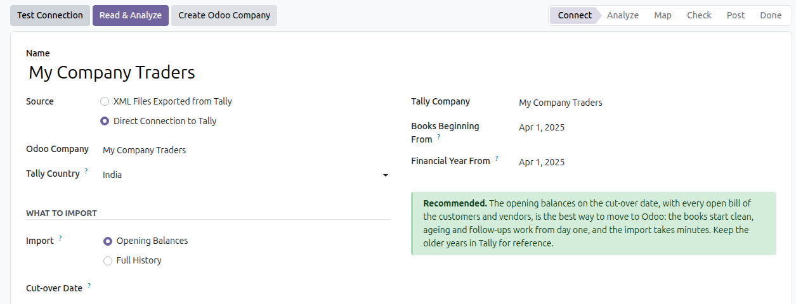
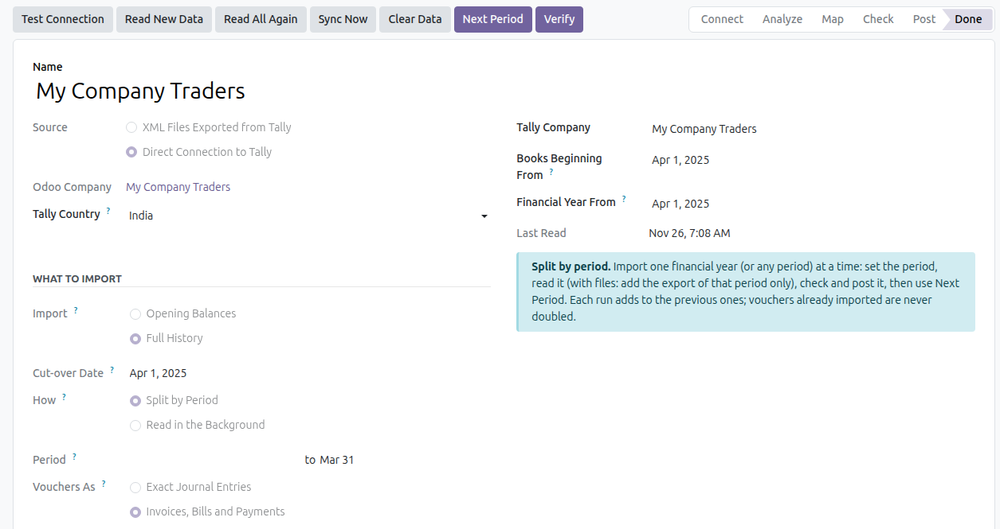
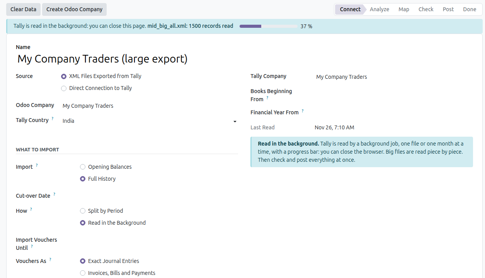
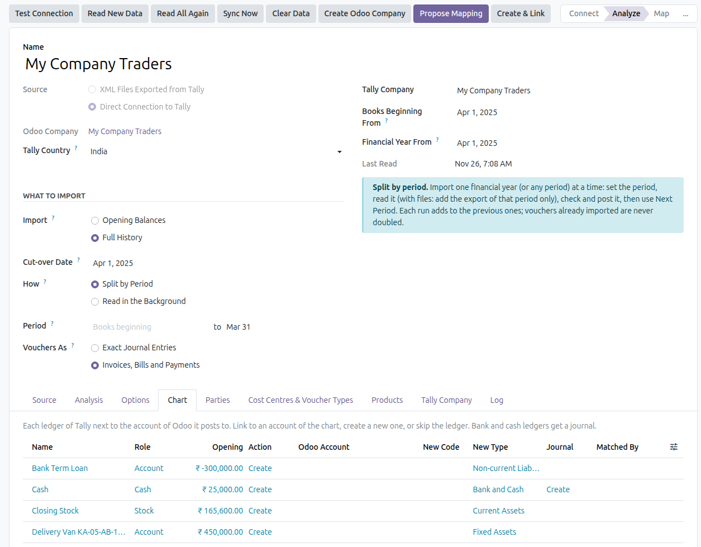
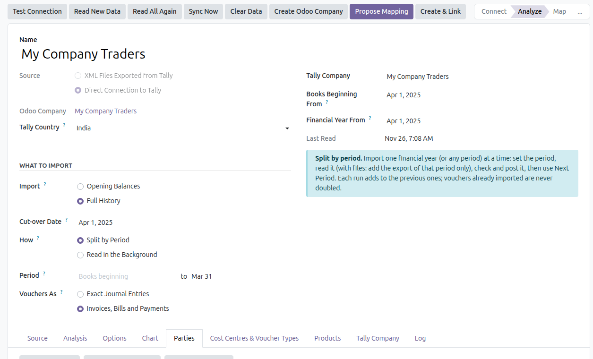
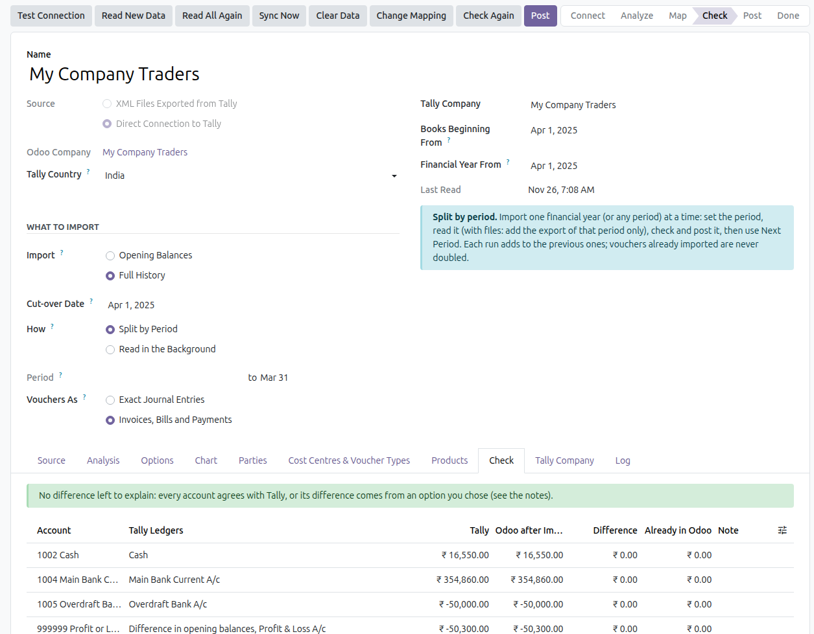
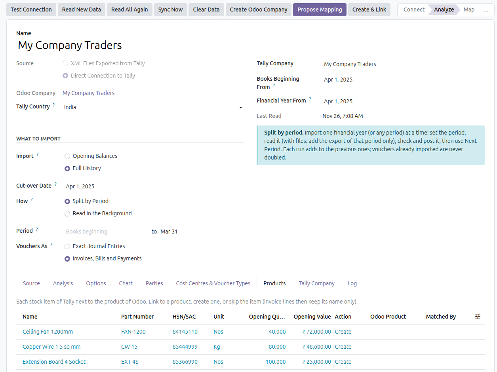

Odoo Mates · free and open source
Import from Tally
Bring a Tally company into Odoo in an afternoon: chart of accounts, parties, opening balances with the open bills, the full voucher history and the stock, checked against the trial balance before anything is posted.
FreeXML uploadDirect connectionOpening balancesFull historyIndia and the GulfCommunity EditionLGPL-3
Installs Tally Connector Base, Accounting and Inventory together.
How it works
Six steps, each one reviewed by you
Nothing is posted until the trial balance check agrees, or you accept the difference.
1
Connect
Upload the XML export of Tally, or connect to Tally on its port. Check the country.
2
Analyze
Counts per voucher type and year, opening difference, problems.
3
Map
Groups and ledgers to the chart; parties Link, Create or Skip.
4
Check
The trial balance of Tally next to what Odoo will hold.
5
Post
Opening entry with open bills, then the vouchers in batches.
6
Sync
New and changed vouchers by Alter ID, while Tally still runs.
Everything a switch from Tally needs
Masters, balances, history and stock, with the details your accountant will look for.
Two Sources
The XML files exported from Tally, or a direct connection to Tally on its port.
Opening Balances First
Recommended: the balances and open bills on the cut-over date; older years stay in Tally.
History by Period
Or the full history, one financial year at a time, each run adding to the last.
Read in the Background
Big companies read one file or one month at a time, with a progress bar.
India and the Gulf
GSTIN, GST and HSN in India; TRN and VAT in the UAE, Saudi Arabia and Bahrain.
Chart Mapping
The 28 groups of Tally map to account types; ledgers link to your chart or create accounts.
Parties
Debtors and creditors matched by GSTIN, name, phone or email: Link, Create or Skip.
Open Bills
One opening line per open bill with its reference and due date: ageing works on day one.
Trial Balance Check
Tally against Odoo per account, before and after posting.
Two History Modes
Exact journal entries, or invoices, bills, refunds and payments reconciled by bill.
Stock
Units, products by part number or HSN, godowns, batches, opening stock at the value of Tally.
Keep in Sync
New and changed vouchers read by Alter ID: run Tally and Odoo side by side.
A closer look
From the export to the posted entries
Screens of a sample trading company imported into Odoo 20 with the India chart of accounts.
Connect to Tally or upload its export

✓ XML exports in UTF-16, UTF-8 or ASCII; the characters Tally writes that XML refuses are cleaned.
✓ Direct connection: the list of open companies, masters, vouchers month by month.
✓ The Tally country sets the tax number (GSTIN or TRN), the taxes matched and the fiscal year.
✓ A sample export ships with the app: try the whole import before using your own data.
Choose what to import

✓ Opening balances with the open bills: recommended, and the default.
✓ Or the full history, split by period: one financial year at a time, Next Period after each one.
✓ Or read in the background: one file or one month per step, resumed after the time limit.
Full history, one period at a time

✓ Set the period, read it, check it and post it; Next Period prepares the following one.
✓ With files: add the Day Book export of that period only.
✓ Each period adds to the previous ones; the periods done are listed.
Big companies read in the background

✓ A progress bar; you can close the browser meanwhile.
✓ Files are read piece by piece, never whole in memory.
✓ Stopped on an error? Resume Reading goes on where it stopped.
See your data before importing it

✓ Masters counted; vouchers per type and financial year.
✓ Books beginning date and the difference in opening balances of Tally.
✓ Problems listed: unbalanced vouchers, unknown ledgers, parties without GSTIN, negative stock.
Map the ledgers to the chart of accounts

✓ Matched by name and type against the installed chart (India, generic or any other).
✓ Tax ledgers linked to the GST taxes of Odoo; bank and cash ledgers get their journals.
✓ Change any line: link another account, create a new one with a generated code, or skip it.
Link, create or skip each party

✓ Matched by GSTIN/VAT, then name, phone and email.
✓ Bulk buttons for the matched and the unmatched parties.
✓ Skipped parties post to a partner you choose, so the balances still agree.
Check the trial balance before posting

✓ Tally, Odoo after the import, and what Odoo already holds, per account.
✓ Posting is blocked until every difference is explained, or accepted to a suspense account.
✓ Verify again after posting, then set the lock date.
Invoices with their products and taxes

✓ Sales and purchase vouchers become invoices and bills with products, GST and cost centres.
✓ If the taxes of Odoo do not give the amount of Tally, the amounts of Tally win.
✓ Receipts and payments are reconciled with the bills named in Tally.
Stock items, units and godowns

✓ Products matched by part number, name or HSN; units and godowns mapped.
✓ Batches become lots; the opening stock is set per godown and batch.
✓ The rate of Tally becomes the cost of the product.
Questions
Before you start
Which versions of Tally?
The connector reads the XML that TallyPrime and Tally.ERP 9 export and answer on their port. Exports differ: if something of yours is not read, send it to us.
Does Odoo need to reach my Tally computer?
Not for the file upload: export from Tally and upload the files, which works with Odoo in the cloud. The direct connection needs Odoo on the same network as Tally.
Which countries?
India (GSTIN, GST taxes, HSN), the United Arab Emirates, Saudi Arabia and Bahrain (TRN, VAT), and any other country with the generic matching.
Opening balances or the full history?
We recommend the opening balances on the cut-over date, with the open bills, and keeping the older years in Tally. The full history is there too, split by period or read in the background, as exact journal entries or as invoices, bills and payments.
Is anything changed in Tally?
No. The connector only reads from Tally.
Can I run the import again?
Yes. Every record of Tally is mapped by its GUID: importing again never duplicates, and a voucher changed in Tally is flagged for review.
Does it need Odoo Enterprise?
No. It runs on the Community Edition, and it is free.
Tally and TallyPrime are trademarks of their owner, Tally Solutions. This app is made by Odoo Mates; it is not made, endorsed or supported by Tally Solutions. The names are used only to say which data the app reads.